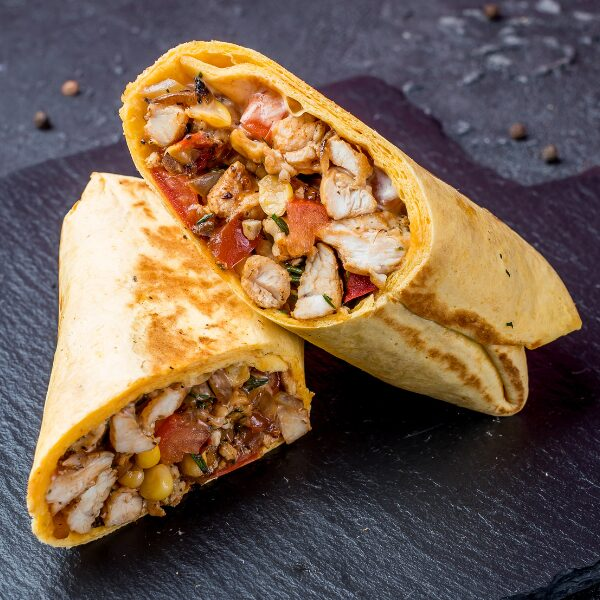
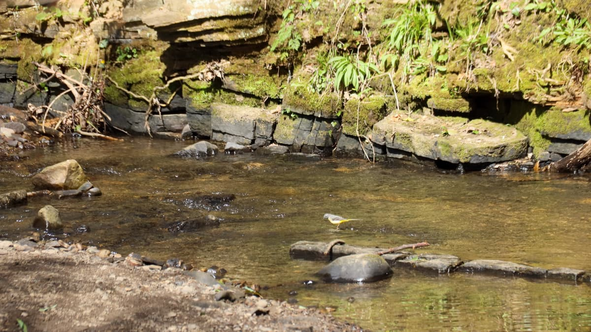
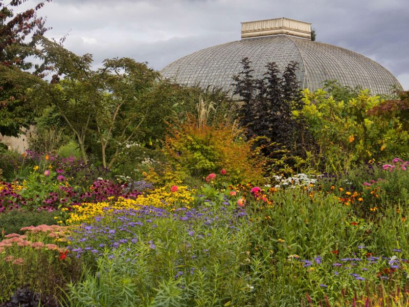

Question 1

What food spot is known for it's burritos that are to-die-for?
Answer (hover):
Grill and Go!
Question 2

What picnic location is part of the 'Porter Valley Parks', that lie along the course of the Porter Brook river?
Answer (hover):
Endcliffe Park!
Question 3

What picnic location opened in 1836?
Answer (hover):
The Botanical Gardens!